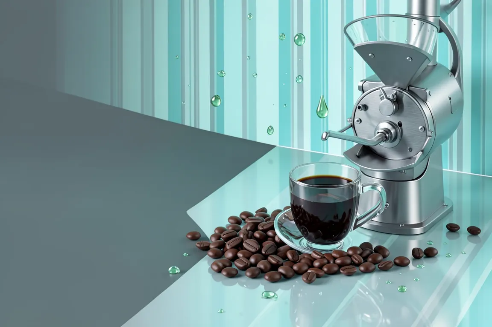

веб · 2000–2006 · также: Aqua, Mac OS X Aqua, Гелевый интерфейс
Прозрачные синие гелевые кнопки, фоны в тонкую полоску, глянцевые капли и окна из шлифованного металла. Пришёл с Mac OS X в 2000 году и сделал экран похожим на воду и леденцы.

Главная идея
Экран — жидкая осязаемая поверхность: каждый элемент управления — глянцевая капля, зовущая нажать.
Принципы дизайна
Делайте кнопки в форме таблетки (радиус 999px) с вертикальным градиентом из 2–3 ступеней и белым глянцевым бликом на верхних 45%.
Берите фон в тонкую полоску из горизонтальных линий 2px при 4% непрозрачности на #EDEDED.
Берите синий Aqua (#2A6FB8–#A8D4FF) как акцент и держите другие цвета ниже 20% поверхности.
Давайте каждой панели внутренний блик (1px белый при 80%) и внешнюю рамку 1px цвета #8E8E8E.
Ставьте мягкую падающую тень 0 2px 6px при 30% чёрного под окнами и кнопками.
Рисуйте значки как глянцевые объёмные детальные предметы 48px и крупнее с отражением.
Набирайте текст гуманистическим гротеском 13–16px; заголовки центрируйте в строке заголовка.